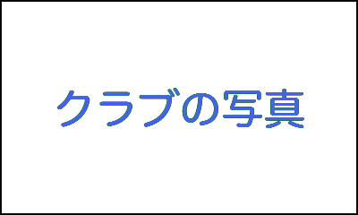
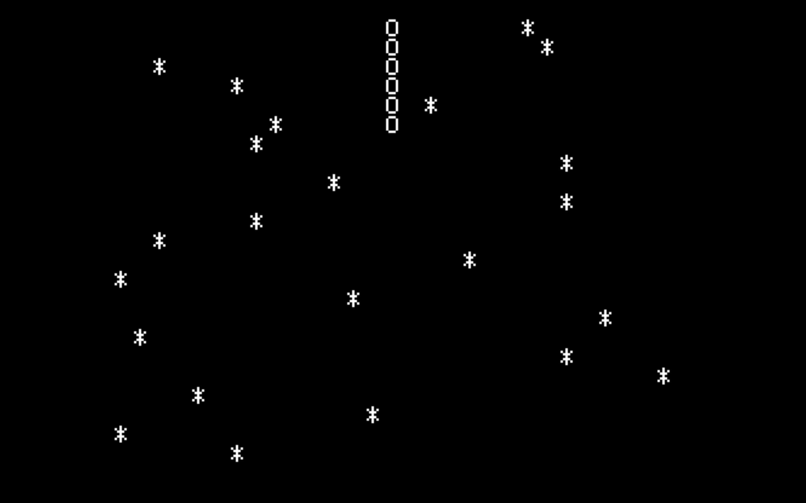
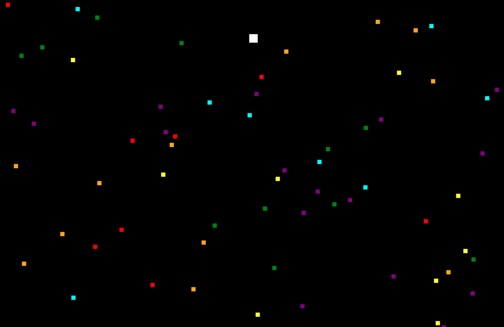

| 目次 | |
|---|---|
| クラブの紹介 | |
| 作品 | |
クラブの紹介文
| 対象 | 小学生〜無制限 |
|---|---|
| 開催日 | 毎週金曜日 |
| 時間 |
前半 17:00~17:45
後半 18:00~19:30 |
| 参加費 |
前半 200円
後半 300円 |
| 人数 |
前半 空があります/空がありません
後半 空があります/空がありません |
|

お化け撃退ゲーム |
お化けを撃退するゲームです。
スペースキーで攻撃できます。 made by YU |
|---|---|
|
足し算ゲーム |
プレイヤーが持っている数字が10になるように落ちている数字を拾ってください。
ちょうど10になれば得点が入ります。 made by GOTO |
|
ダイフクセイジンヲタオセ |
ダイフクセイジンが攻めて来るので,スペースで攻撃してください。
made by MANAITA |
| JavaScript | |
|---|---|
|

かわくだり JS Edition |
リンクで飛ぶとすぐにスタートします。
操作は←→キーで岩にぶつからないようにかわをくだって行きます。 ENTERキーでリスタートできます。 |